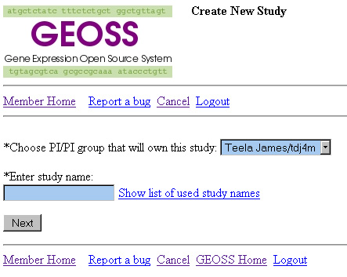
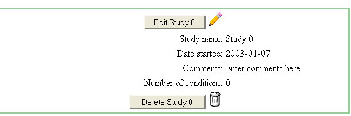
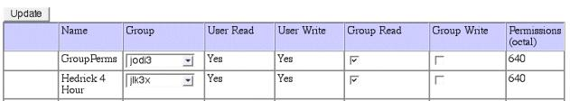
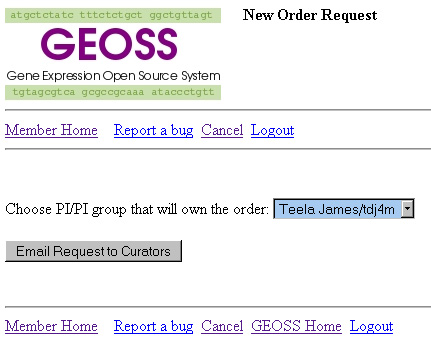
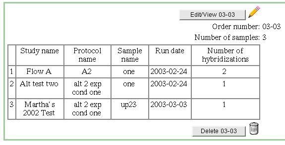
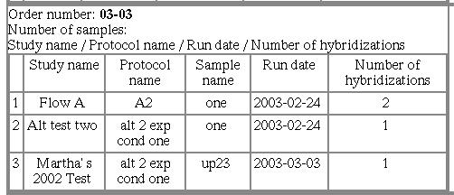
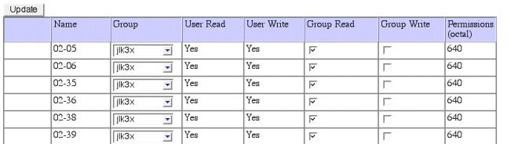
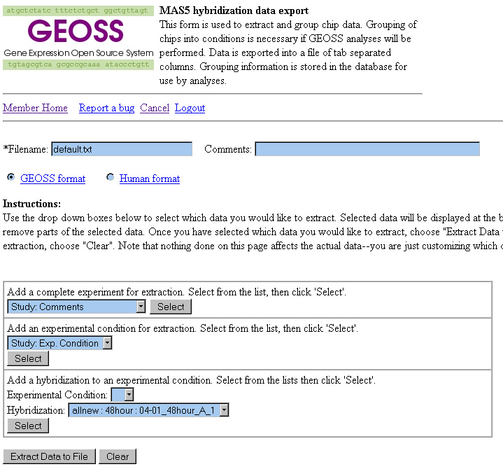
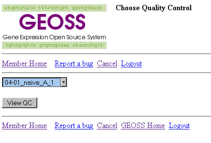
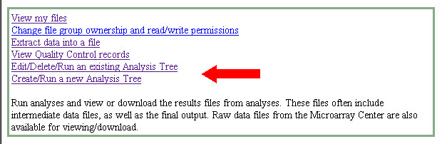

Install Guide Admin Guide User Guide Developer Guide The purpose of this document is to guide you through GEOSS. You will be able to add information pertaining to your studies, experimental conditions, orders, samples, and hybridizations. This data will then be viewed and processed accordingly by the Biomolecular Research Facility (BRF).
When you are ready to enter
data simply sign in using the "Member Login" on the left of
the screen. If you need
an account or have questions about the one you are currently using please
contact the GEOSS Database Administrator via email at: geoss-help@virginia.edu. Once you have signed on to
the system you will be brought to the GEOSS Member Home Page. (**NOTE: If you do not see anything in the drop down list the reason is most likely due to your not being a member of your PI's group. He/she will have to sign on and add you to their group via the "Manage membership of my groups link.")  Once past the PI ownership screen you will be prompted to enter your data. Enter the Study Name, Study Start Date, and any Comments regarding the study that you may find useful at a later time. * Study names must be unique.
You can click the "Add a blank empty experimental condition" button or you can choose to copy data you submitted from a previous experimental condition. To copy from a previous condition simply choose that condition from the drop down list and click "Paste." Repeat this process again for each experimental condition that you intend to add. You will see the No. of Experimental Conditions incrementing as you proceed.
If you find that you have
added too many experimental condition entries you can simply click the
Delete checkbox and that condition will be deleted upon submission
of entries. You can edit your studies and experimental conditions by clicking on the "Edit/Delete an existing study" link located on the GEOSS Member Home Page. Once the BRF (microarray center) begins to process your order the experimental conditions will be locked. You can still add conditions at this point but you will not be allowed to edit the conditions that existed when the BRF reviewed and locked the order.  You can change the group ownership and/or group read-write permissions for the studies you own by clicking on the "Change study group ownership and read/write permissions" link located on the GEOSS Member Home Page. The experimental conditions for each study will be changed to reflect study permissions (as appropriate). Any individual who is a member of your group will be affected by the settings here. Read privileges allow the members of a particular group to read data pertaining to the specific study. Write privileges will allow those same users to modify (and delete where appropriate) this data. If you have individuals who will only be allowed to read or write to some of your data then you need to create a specific group for those individuals (see the section below addressing creation of new groups). *Note: those individuals who have access to ALL of your data will need to be listed as members in all of your groups.  Once you have entered all your study and experimental condition information you can request an order from the BRF by clicking on the "Request a new order" link. You will need to again choose the PI/PI group that will own the order. This ownership should match the ownership chosen for the study/experimental conditions to which this order will be related. Once the BRF receives your request an order will be generated in the system. The BRF will contact you to let you know that the order has been created. You can then sign back on to the GEOSS system to enter your sample and hybridization information.  To enter data for the order that has been generated by the BRF click on the "Edit/Delete an existing order" link. To add samples simply click on the "Add Sample" button one time for each sample that you'd like to add. Describe the samples that you will deliver to the chip lab and enter hybridization information:
When you are ready to enter
your hybridization information click on the "Next (Hybridization Info)"
button. The Hybridization entry form will allow you to identify which chip you would like each of your sample(s) hybridized to.
You can edit your order up until the time that the BRF has reviewed your order and placed it in a locked status. This status is necessary to preserve data integrity. If you need to have an order unlocked please contact the BRF or the GEOSS Database Administrator(GEOSS-help@virginia.edu).  The "View all orders" link will allow you to see a summary of all the orders you have sent to the BRF. You will also see orders of other individuals as long as you are a member of their group.  You can change the group and/or read-write permissions of your orders by clicking on the "Change order group ownership and read/write permissions" link located on the GEOSS Va Member Home Page. Samples and hybridizations within a given order will be given the same permissions as the order.  At your GEOSS Home Page you
can view a listing of your files by following the "View my files" link.
This list includes all files that are currently in your personal repository
and should include all raw, processed, and Affymetrix generated files.
Each file can be viewed by clicking on the associated link. You can change the group ownership
and/or group read-write permissions of your files by clicking on the "Change
file group ownership and read/write permissions" link located on the GEOSS
Va Member Home Page. File permissions for the owner of the data are determined
by the system. We do not allow users to remove read/write permissions
for themselves. The "Extract data into a file" link allows you to export your data into a text file that can be used as input to the GEOSS analysis routines or as input into your third party analysis program(s). Please refer to the analysis documents for further instruction. The links can be found on the GEOSS home page just below the link to this step-by-step document. 
To view the quality control data for a particular hybridization follow the "View Quality Control records" link located on your member home page. Simply choose the appropriate hybridization from the drop down list before clicking on the "View QC" button. This information is available once the derived values have been loaded by the BRF. 
The "Edit/Delete/Run an existing Analysis Tree" link as well as the "Create/Run a new Analysis Tree" link allow you to manage new and existing Analysis Trees. Please refer to the analysis documents for further instruction. The links can be found on the GEOSS home page just below the link to this step-by-step document.  To verify that your contact
information is accurate follow the "Update my info" link at the bottom
of your GEOSS Home Page. You can modify this information as needed. You can add and remove members
from your group by clicking on the "Manage membership of my groups" link.
All members of your group will be able to read your data. If you need
to break your data up such that groups of individuals have access to certain
subsets of your data then you will need to set up groups (see next screen
shot). To create groups click on the link to "Create a new group" on the bottom of the main GEOSS web page. Enter Group name of
your preference. Please do not use hyphens in your group names. If you have any questions or concerns regarding the instructions listed above please contact the GEOSS Va Database Administrator via email at geoss-help@virginia.edu.
|